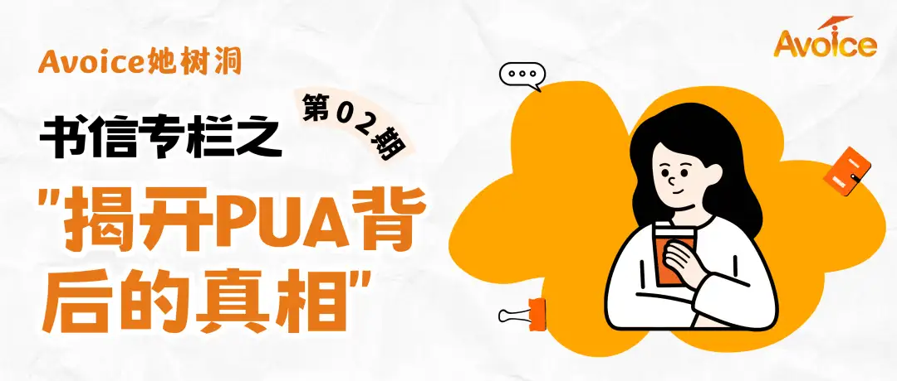
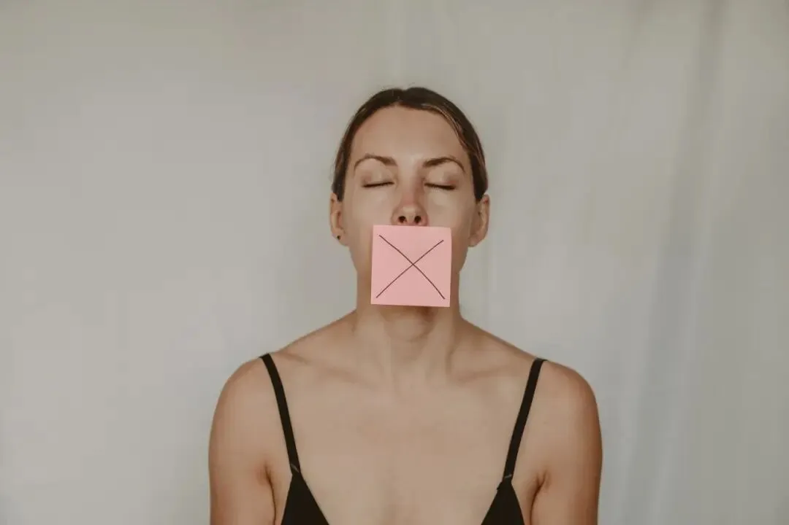

读者来信
绽放的郁金香：
我不喜欢和男性交往，因为在小时候经常看见父亲暴力母亲，有时候也会被父亲暴力，成年后，又看见男性领导PUA女性，这样的场合太多次，童年的回忆里都是父亲负能量的画面，经常不想看见父亲和母亲，想远离她们，但是，现实又不能远离她们，这样反反复复的思想经常在大脑中回忆！很累！
Avoice回信
首先，非常理解您过往的经历，一直想要逃离自己厌恶的环境，却又不得不在环境中生存的矛盾感。既然我们暂时只能适应这个环境，也许可以试着去认识他们行为背后的动机，做到知己知彼，聚焦提升能力摆脱困境，而非关注困难带来焦虑。学习PUA的专业知识，便是好的开始。
当您通过提升能力，弥补了问题解决的信息差后，不仅可以变得更加强大，解决问题的钥匙也会自然而然出现在您的手中。“不喜欢和男性交往”这一现象背后的本质，并不一定是真的不喜欢和男性交往，而是由于过往经历，害怕因为和男性交往，再次带来伤害，是一种自我保护。而掌握如何和男性交往的信息差，便是解决这一问题的钥匙所在。
PUA，真老虎？纸老虎？
一、为何操纵者大多是男性
有的男性试图通过情感操纵来获得掌控权力的快感，也许他们在工作中并不成功，甚至还有些失败，但至少能完全掌控自己的爱人。有的男性则极其认同性别刻板印象，认为男性才有话语权，女性只能服从男性。操纵者常常以“爱”为由，麻痹自己：“我是为对方好啊，我真是个好人。”但实际上，他们只是为了从情感操纵中获得真正的利益，不论那是金钱、时间、权力，还是地位。而通过隐蔽、有技巧的威胁、羞辱、操纵和支配手段，他们便能持续从中获益。
1
性别刻板印象：
男性权威、女性服从
女性从小就被要求学习成为一个“照顾者”和“牺牲者”，被要求学会做饭、做家务、照顾兄弟姐妹、性格温柔顺从，并成为伴侣的“贤内助”，如果做不到，就会被贴上“不贤惠”的标签。而男性则被鼓励与他人竞争，获得胜利，即使男性犯了错，也更容易被原谅。
步入成年后，女性在工作和生活中依旧继续照顾他人的感受，并试图取悦他人，以避免他人的不满。以家庭为例，女性不仅时刻以夫妻利益为先，还需确保丈夫和孩子都满意；而男性成年后，则更多关注个人需求和发展，并将这一理念带入家庭和生活中。
有三方面原因导致男性在亲密关系中采用情感操纵手段。第一，他具备支配倾向。第二，他不把伴侣当做独立的、完整的人去尊重。第三，他接受自己操纵者的角色，社会系统在无形中为操纵者提供有利环境。

如果男性幼年时曾被父亲严厉惩罚，成年后，便有可能同样对待自己的妻子和孩子。
2
社会文化基础：
男性占据主导和支配权
直到今天，男性依旧在社会的各个领域占据主导地位，享有比女性更多的优待，这导致，男性眼中的世界，和女性截然不同，也无法理解，在这一场“人生游戏”中，女性在面对各种歧视和不公时，生存的艰难。
为了渴望一个安全的生存环境，有的女性开始相信，只有顺从和依附男性力量，才能获得忠诚和幸福。但实际情况是，如果女性为了讨好伴侣而放弃自己的人生目标，一旦婚姻失败，就会陷入无尽的孤立之中。好的做法是，男性和女性互相尊重和欣赏，在良性支持系统中，朝着一致的目标，共同迈进。
3
操纵者的创伤：
操纵不过是对怯懦内心的掩饰
当有的男性在工作或生活中受挫时，便会试图通过操纵爱人，在对方身上找回被践踏的力量感。
4
为什么操纵者不放对方离开这段糟糕的关系？
依赖伴侣
对未来的恐惧
爱情观扭曲
不知道如何建立平等的关系
因伤害他人而感到愉悦
二、为何被操纵者大多是女性
1
被假象迷惑：
操纵者善用短暂的温柔挽回对方
美剧《女佣》（Maid）中有这样一个故事，女主带着女儿离开了有暴力倾向的男友，到女性救助机构居住，男友突然一改往日的态度，变得无比温柔，请求女主回家，女主经过一段时间的观察，以为男友彻底改变了，便和男友一起回到家中，但当女主第二天醒来，却惊恐地发现，她被男友软禁了，历经千辛万苦，才再次逃离了这个“家”。
这被称作“暴力周期”，暴力过后，紧跟着一段“蜜月期”，作用是为了挽回这个被伤害的女性。之后，男性会给对方一线希望，就好像暴力不曾发生过。当女性开始相信男性，便再次进入一段“暴力期”，而这反反复复的感情，不过是一种娴熟的情感操纵手段而已。若女性无法识别，长此以往，便会陷入孤独和低自尊的状态，变得更加依赖操纵者，无法离开。
2
“圣母心”泛滥：
操纵者常常会博取女性的同情
操纵者认为自己是受害者，希望博取女性同情。女性则把自己当做“救世主”，相信通过爱，可以帮助对方变得更好，从而无意识地牺牲自我，成全对方。要知道，帮助男性变得更好，并不需要女性以牺牲自我为代价。
3
社会大环境：
经济和舆论压力让女性甘于被操纵
女性如果考虑分手或离婚，不仅要承受巨大的社会压力，还有可能遭受流言蜚语。一些全职母亲，迫于经济压力和孩子，不得不仍和操纵者生活在一起。
专栏介绍：
Avoice“她树洞”上线啦！这是一个和读者来信互动的新专栏，每一期“她树洞”都有一个话题，本期话题为“揭开PUA背后的真相”。
我们在这里期待每一封真挚的来信，期待看到更多女性可以勇敢面对、重新认识过往，也希望通过书信 凝聚更多女性智慧，汇聚强大女性力量。一些有代表性的问题，拟不定期邀请执业心理咨询师、律师等专业人士或有类似经历的志愿者进行回信。
如果您有关于PUA的故事想和我们分享，或有关于PUA的困惑想与我们探讨交流，欢迎写信给我们，邮箱是
如您不想透露真实身份，请务必在信件中使用化名。我们会选取较为适合的信件，在下一期栏目中回信。如您不想公开来信，也请在信件中告知，谢谢！
参考资料：
《情感操纵》，丽莎·阿伦森·方特斯
美剧《女佣》（Maid）
撰稿人 | Jane
审校 | 秦科
排版、封面制作 | 陈佩瑾
图片来源 | Freepik